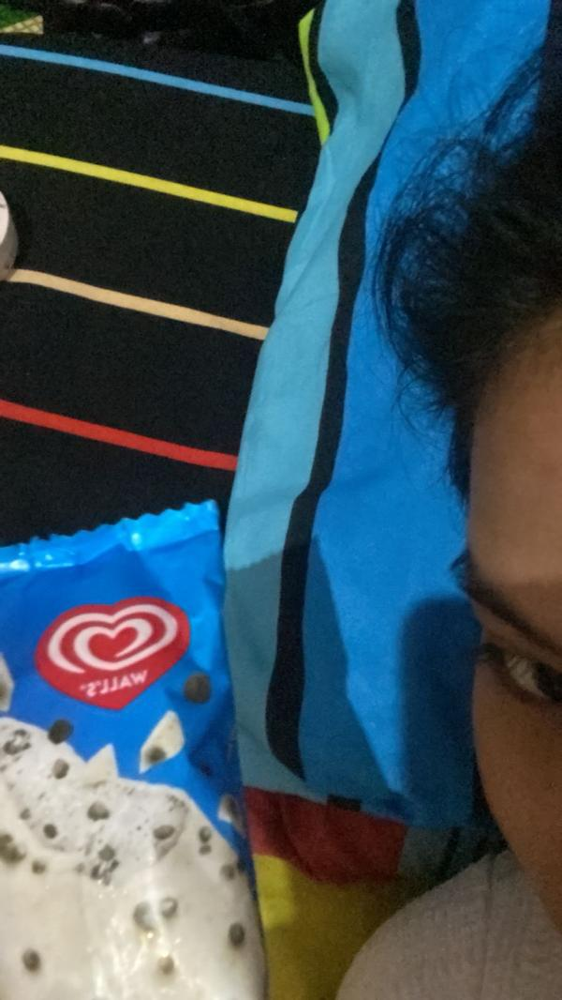
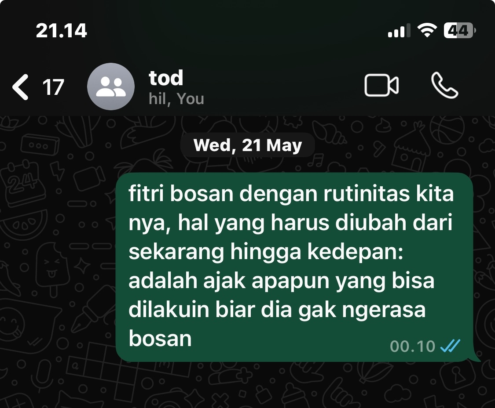
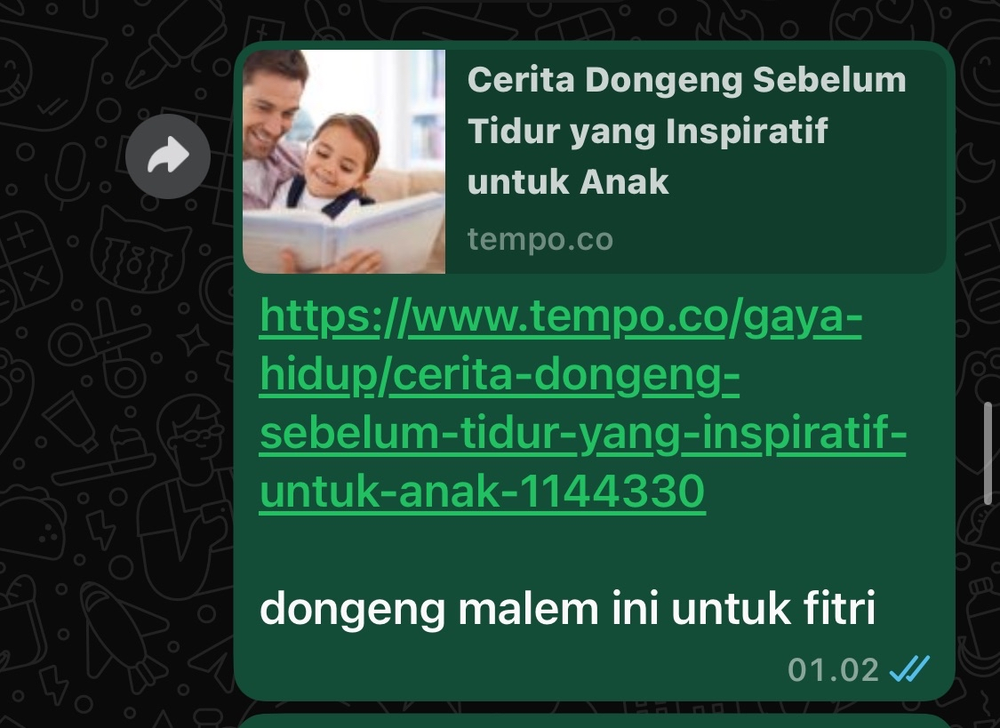
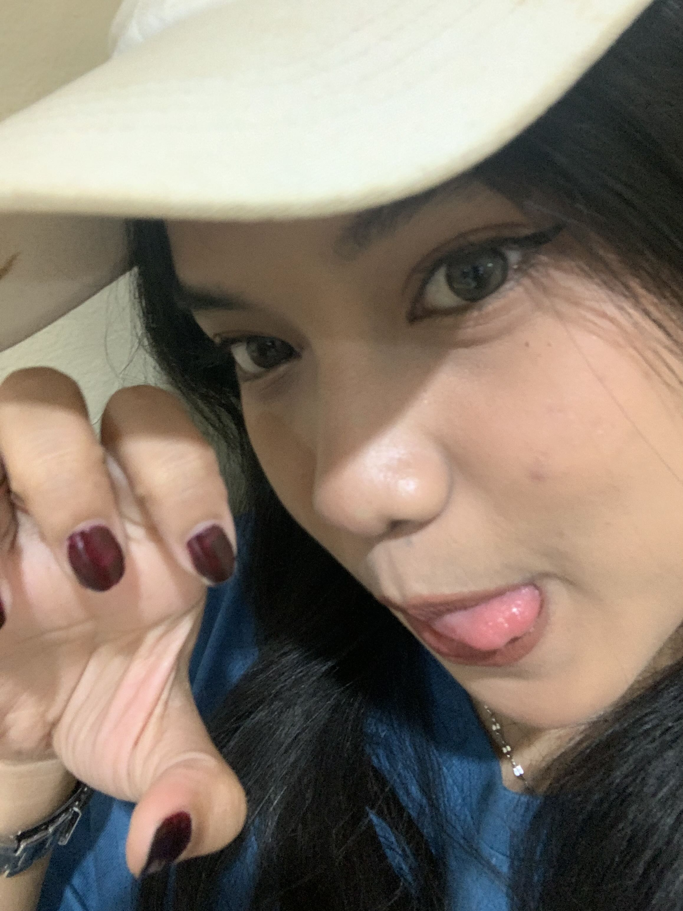

sebelum kamu mulai scroll, aku mau kasih tau dikit
di halaman ini ada lagu yang aku pasang buat nemenin kamu baca,
jangan lupa untuk kamu klik dulu lagunya yaa 🔉
sebelumnya aku mau cerita sedikit, aku buat project ini semingguan lebih kayaknya
dari yang banyak error, satu layar tiba-tiba jadi hitam, lagu nya kadang ga muncul, laptopku sampe overheat, aku tiba tiba drop 2 hari, mencret juga wkwkw dll.
tapi itulah yang dinamakan totalitas aku benerin semuanya dan alhamdulillah pas banget di hari rabu malem jam menunjukkan 20.00
sesuai target awal aku buat project ini
ini aku buat ungkapin isi hati satu sama lain aja biar kamu ga bosan, aku luangin waktuku buat bikin ini
maaf ya kalo kesannya masi jelek, i try my best of the best to make it, trust me huhu..
sebenernya sih program ini udah jadi dari kemarin kemarin,
cuman nih aku revisi ulang karena sebelumnya background nya tuh dinosaurus banyak gitu wkwk
akhirnya aku ganti jadi sincan biar sesuai kesukaanmu
enjoyy! hope u like it!

kamu masih inget ga ini pap yang kamu kirim ke aku tanggal 1 Maret pada saat itu?
kamu pap es krim ini, dan aku notice sampe aku simpen baik-baik
pas kita ketemu di bandung day 1 aku beliin es krim itu ke kamu 🍦 (dua malah! beda rasa tapi hehe)
sayangnya ga sempet kamu makan ya karena keburu mencair, gapapa kok!

be tau ga...
setiap kita salah paham atau ada yang bikin kamu sedih, aku selalu catet itu
biar aku bisa belajar, inget, dan ga ngulangin kesalahan yang sama
aku minta maaf atas semua kondisi yang bikin kita sekarang ga sejalan
maaf aku masih banyak salahnya ke kamu

sekarang hal yang paling aku tunggu tiap malam itu dongengin kamu
kadang tuh aku mikir kamu ni uda gede ya, segala harus dongeng sebelum tidur pake ada acara ngedot susu segala wkwk
lucu aja gitu aku kadang kalo keinget kayak toddler kamu
tapi tiap kali aku mau dongengin kamu tu, aku selalu catet tau biar ga kelamaan kamu nungguin akunya
kalo aku nya ga dongeng dongeng yaaa berarti masih kangen aja aku, peace :D
aku tau kok, di kondisi kita yang sekarang lagi ga baik-baik aja...
tapi sebelum aku nyerah, aku mau tau... masih bisa ga ya kita balik seperti dulu?
jujur, aku kangen banget hal itu.
aku tau LDR ini bikin kamu bosan, dan aku ngerti kok soal itu. aku juga udah try be, tapi aku gabisa jalan sendiri..
aku cuma butuh kamu ikut jalan bareng aku
dengan aku bikin ini, itu juga sebenernya aku mau ungkapin perasaan aku dan kamu juga
mungkin conversation yang biasa aku lakukan terbilang bosan di kamu, maka dari itu aku buat ini..
kita pernah janji buat belajar jadi lebih baik satu sama lain kan?
yuk biasain ngobrolin dulu kalo ada masalah di hari itu, jangan tidur dalam keadaan heavy hearts cause a problem...
be, pls look at me on last i try for us.. ini mungkin langkah terakhir aku
aku masih mau bareng kamu, jatuh bangun sama kamu aku masih mau belajar jadi pria yang baik buat kamu
masih banyak kota-kota yang harus kita taklukan bareng...
tapi kalau kamu setelah baca ini semua dari yang aku buat dan ga ada perubahan apapun dari perasaanmu...
tak apa, not u're mistake kok. maybe i deserve all the pain and disappointment i am feeling rn.
i mean it is my fault, i should've done better...

terima kasih sekali udah baca sampai akhir ya!
mantan mu kebetulan anak teknik, jadi ilmunya mau aku salurin kesini
as always i say, jaga kesehatan mu selalu ya, minum vitaminnya yang rutin!
u can text or call me everytime u want, i'll always be here
heran dah cakep mulu kamu tiap detik, menit, jam pantes aku ga pernah salah untuk kasih kamu julukan... POAT — Prettiest of All Time 💐
have a nice day ya fighter — Fitriya Rahmah!
boleh ga untuk kamu utarain perasaan kamu atau respon kamu deh bebas setelah lihat ini lewat kotak dibawah ini ya! 💌
malam kemarin saat kita telfon, kamu sempat tanya kenapa aku masih bertahan di sini kan?
sempat beberapa kali aku kecewa, tetapi aku masi meresponmu dengan baik bahkan ngasi kesempatan
kamu untuk kesekian kalinya dan berkali kali
kalo kamu bertanya kenapa? karna aku ingin membawa kamu keluar dari zona toxic itu yang ngebuat watak mu jadi keras
kalo kamu bertanya lagi kenapa aku lakuin itu? aku akan jawab bahwa aku gamau melihat seseorang kesesat didalam kegelapan yang
bahkan dia aja gatau harus keluar lewat mana dan dari mana serta harus mulai dari mana
kalo kamu bertanya mengenai bagaimana perasaan dan keadaan sekarang apa aku capek?, mental?, sakit?
jawabannya pasti iya. tetapi rasanya lebih sakit kalo aku gagal bawa kamu keluar dari zona itu. i'll always try to fix us..
i'm sending u this because i want u to know how truly grateful i am
to have met someone as amazing as u and u mean the world to me.
i hope u know how glad i am to have u in my life,
and i wish i never have to lose u.
u're incredible, u make me smile and laugh so much.
u're my favorite destination, my home.
please don't be too hard on urself, because u're more than enough.
i love u so much
remember fit, as long as i'm alive u'll always have someone
who's proud of u in everything 🤍 terimakasih sekali lagi kamu udah baca semuanya sampai akhir
aku tau isinya panjang banget, sampe aku bingung sendiri sama program yang aku buat haha
kalau kamu udah baca semua dan mau nutup halamannya,
tinggal klik tombol yang ada di bawah 🫶